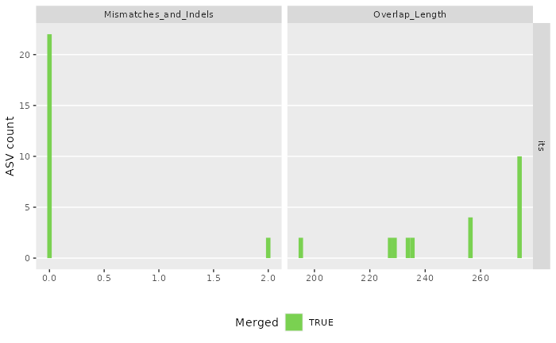
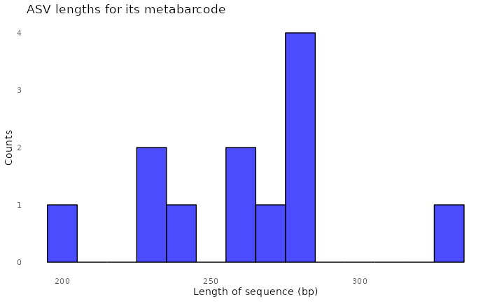
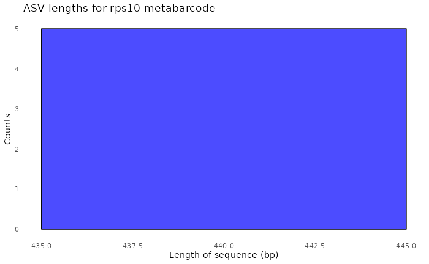
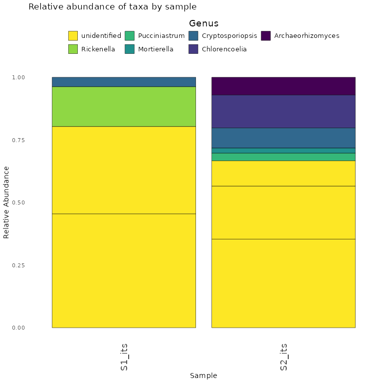

Before You Start
In the following example, we demonstrate key package functionality using a subset of reads from two samples containing pooled ITS1 fungal and rps10 oomycete amplicons. The databases used in the assign taxonomy step are also abridged versions of the full UNITE and oomyceteDB databases.
You can follow along because all test data and associated CSV input files are loaded with the package. Additional examples are also available on the website.
Please note, for speed, the test dataset is comprised of randomly subset reads for the samples (S1 and S2), and due to database size, the full UNITE database is included in the package, but is also a smaller subset of the larger database.
You will need to prepare your raw read files and fill in the metadata.csv and primerinfo_params.csv templates.
Format of the PE amplicon files
The package takes forward and reverse Illumina short read sequence data.
To avoid errors, the only characters that are acceptable in sample names are letters and numbers. Characters can be separated by underscores, but no other symbols. The files must end with the suffix R1.fastq.gz or R2.fastq.gz.
Format of metadata file (metadata.csv)
The format of the CSV file is simple. A template is here.
The only two necessary columns (with these names) are:
- sample_name column
- primer_info column
Any additional metadata should then be pasted after these two columns. They can be referenced later during the analysis steps and save a step of loading metadata later.
S1 and S2 are come from a rhododendron rhizobiome dataset and are a random subset of reads.
You will notice S1 and S2 are included twice in the ‘metadata.csv’ sheet. This is because these two samples contain pooled reads (ITS and rps10). To demultiplex and run both analyses in tandem, include the same sample twice under sample_name, and then change the primer_name.
Example using test dataset:
| sample_name | primer_name | organism |
|---|---|---|
| S1 | rps10 | Cry |
| S2 | rps10 | Cin |
| S1 | its | Cry |
| S2 | its | Cin |
Format of primer and parameters file (primerinfo_parms.csv)
DADA2 Primer sequence information and user-defined parameters are placed in primerinfo_params.csv.
To simplify how functions are called, user will provide parameters within this input file. We recommend using the template linked here. Remember to add any additional optional DADA2 parameters you want to use.
The only required columns user must fill in are: 1.primer_name compatible options are currently (add to cells as written as this is crucial during database formatting step): rps10, its, r16S, other1, other2 2.forward-forward sequence 3.reverse-reverse sequence
Example template for ‘primerinfo_params.csv’
| primer_name | forward | reverse | already_trimmed | minCutadaptlength | multithread | verbose | maxN | maxEE_forward | maxEE_reverse | truncLen_forward | truncLen_reverse | truncQ | minLen | maxLen | minQ | trimLeft | trimRight | rm.lowcomplex | minOverlap | maxMismatch | min_asv_length |
|---|---|---|---|---|---|---|---|---|---|---|---|---|---|---|---|---|---|---|---|---|---|
| rps10 | GTTGGTTAGAGYARAAGACT | ATRYYTAGAAAGAYTYGAACT | FALSE | 100 | TRUE | FALSE | 1.00E+05 | 5 | 5 | 0 | 0 | 5 | 150 | Inf | 0 | 0 | 0 | 0 | 15 | 0 | 50 |
| its | CTTGGTCATTTAGAGGAAGTAA | GCTGCGTTCTTCATCGATGC | FALSE | 50 | TRUE | FALSE | 1.00E+05 | 5 | 5 | 0 | 0 | 5 | 50 | Inf | 0 | 0 | 0 | 0 | 15 | 0 | 50 |
For more info on parameter specifics, see Documentation tab.
Reference Database Format
For now, the package is compatible with the following databases:
oomycetedb from: https://grunwaldlab.github.io/OomyceteDB/
SILVA 16S database with species assignments: https://www.arb-silva.de/
UNITE fungal database from https://unite.ut.ee/repository.php
A user can select up to two other databases, but will first need to reformat headers exactly like the SILVA database. See more in the ‘Documentation’ tab.
Databases will be copied into the user-specified data folder where raw data files and csv files are located. The names will be parameters in the assignTax function
Additional Notes
Computer specifications may be a limiting factor. If you are using the SILVA or UNITE databases for taxonomic assignment steps, an ordinary personal computer (unless it has sufficient RAM) may not have enough memory for the taxonomic assignment steps, even with few samples. The test databases are comprised of randomly subset reads. The following example, should run on a personal computer with at least 16 GB of RAM.
Users need to upload their own databases to their input data folder. If computer crashes during the taxonomic assignment step, you will need to switch to a computer with sufficient memory.
Please also ensure that you have enough storage to save intermediate files in a temporary directory (default) or user-specified directory before proceeding.
Loading the Package
For now, the package will be loaded by retrieving it from GitHub. We are submitting package to CRAN.
devtools::install_github("grunwaldlab/demulticoder")
#devtools::load_all("~/demulticoder")
library("demulticoder")
library("metacoder")
library("dplyr")Reorganize data tables and set-up data directory structure
The sample names, primer sequences, and other metadata are reorganized in preparation for running Cutadapt to remove primers.
analysis_setup<-demulticoder::prepare_reads(
data_directory = system.file("extdata", package = "demulticoder"),
output_directory = "~/output_test_dataset",
tempdir_path = "~/temp_test_dataset",
tempdir_id = "test_dataset",
overwrite_existing = TRUE)
Remove primers with Cutadapt
Before running Cutadapt, please ensure that you have installed it.
demulticoder::cut_trim(
analysis_setup,
cutadapt_path = "/usr/bin/cutadapt",
#cutadapt_path = "/usr/bin/cutadapt",
overwrite_existing = TRUE)
#> Running Cutadapt 3.5 for its sequence data
#> Read in 2564 paired-sequences, output 1479 (57.7%) filtered paired-sequences.
#> Read in 1996 paired-sequences, output 1215 (60.9%) filtered paired-sequences.
#> Running Cutadapt 3.5 for rps10 sequence data
#> Read in 1830 paired-sequences, output 1429 (78.1%) filtered paired-sequences.
#> Read in 2090 paired-sequences, output 1506 (72.1%) filtered paired-sequences.
ASV inference step
Raw reads will be merged and ASVs will be inferred
make_asv_abund_matrix(
analysis_setup,
overwrite_existing = TRUE)
#> 710804 total bases in 2694 reads from 2 samples will be used for learning the error rates.
#> Initializing error rates to maximum possible estimate.
#> selfConsist step 1 ..
#> selfConsist step 2
#> selfConsist step 3
#> Convergence after 3 rounds.
#> Error rate plot for the Forward read of primer pair its
#> Warning in scale_y_log10(): log-10 transformation introduced
#> infinite values.
#> Sample 1 - 1479 reads in 660 unique sequences.
#> Sample 2 - 1215 reads in 613 unique sequences.
#> 724230 total bases in 2694 reads from 2 samples will be used for learning the error rates.
#> Initializing error rates to maximum possible estimate.
#> selfConsist step 1 ..
#> selfConsist step 2
#> selfConsist step 3
#> Convergence after 3 rounds.
#> Error rate plot for the Reverse read of primer pair its
#> Warning in scale_y_log10(): log-10 transformation introduced
#> infinite values.
#> Sample 1 - 1479 reads in 1019 unique sequences.
#> Sample 2 - 1215 reads in 814 unique sequences.
#> 1315 paired-reads (in 21 unique pairings) successfully merged out of 1416 (in 32 pairings) input.
#> Duplicate sequences in merged output.
#> 1063 paired-reads (in 25 unique pairings) successfully merged out of 1108 (in 28 pairings) input.
#> Duplicate sequences detected and merged.
#> Identified 0 bimeras out of 38 input sequences.
#> 824778 total bases in 2935 reads from 2 samples will be used for learning the error rates.
#> Initializing error rates to maximum possible estimate.
#> selfConsist step 1 ..
#> selfConsist step 2
#> Convergence after 2 rounds.
#> Error rate plot for the Forward read of primer pair rps10
#> Warning in scale_y_log10(): log-10 transformation introduced
#> infinite values.
#> Sample 1 - 1429 reads in 933 unique sequences.
#> Sample 2 - 1506 reads in 1018 unique sequences.
#> 821851 total bases in 2935 reads from 2 samples will be used for learning the error rates.
#> Initializing error rates to maximum possible estimate.
#> selfConsist step 1 ..
#> selfConsist step 2
#> selfConsist step 3
#> Convergence after 3 rounds.
#> Error rate plot for the Reverse read of primer pair rps10
#> Warning in scale_y_log10(): log-10 transformation introduced
#> infinite values.
#> Sample 1 - 1429 reads in 1044 unique sequences.
#> Sample 2 - 1506 reads in 1284 unique sequences.
#> 1420 paired-reads (in 2 unique pairings) successfully merged out of 1422 (in 4 pairings) input.
#> 1503 paired-reads (in 5 unique pairings) successfully merged out of 1504 (in 6 pairings) input.
#> Identified 0 bimeras out of 5 input sequences.
#> $its
#> [1] "~/temp_test_dataset/test_dataset/asvabund_matrixDADA2_its.RData"
#>
#> $rps10
#> [1] "~/temp_test_dataset/test_dataset/asvabund_matrixDADA2_rps10.RData"Taxonomic assignment step
Using the core assignTaxonomy function from DADA2, taxonomic assignments will be given to ASVs.
assign_tax(
analysis_setup,
asv_abund_matrix,
retrieve_files=TRUE,
overwrite_existing = TRUE)
#> Duplicate sequences detected and merged.
#> samplename_barcode input filtered denoisedF denoisedR merged nonchim
#> 1 S1_its 2564 1479 1425 1431 1315 1315
#> 2 S2_its 1996 1215 1143 1122 1063 1063
#> samplename_barcode input filtered denoisedF denoisedR merged nonchim
#> 1 S1_rps10 1830 1429 1429 1422 1420 1420
#> 2 S2_rps10 2090 1506 1505 1505 1503 1503Reformat ASV matrix as taxmap and phyloseq objects after optional filtering of low abundance ASVs
objs<-convert_asv_matrix_to_objs(analysis_setup, minimum_bootstrap = 0, save_outputs = TRUE)
#> Rows: 38 Columns: 5
#> ── Column specification ────────────────────────────────────────────────────────
#> Delimiter: ","
#> chr (3): asv_id, sequence, dada2_tax
#> dbl (2): S1_its, S2_its
#>
#> ℹ Use `spec()` to retrieve the full column specification for this data.
#> ℹ Specify the column types or set `show_col_types = FALSE` to quiet this message.
#> For its dataset
#> Taxmap object saved in: ~/output_test_dataset/taxmap_obj_its.RData
#> Phyloseq object saved in: ~/output_test_dataset/phylo_obj_its.RData
#> ASVs filtered by minimum read depth: 0
#> For taxonomic assignments, if minimum bootstrap was set to: 0 assignments were set to 'Unsupported'
#> ~~~~~~~~~~~~~~~~~~~~~~~~~~~~~~~~~~~~
#> Rows: 5 Columns: 5
#> ── Column specification ────────────────────────────────────────────────────────
#> Delimiter: ","
#> chr (3): asv_id, sequence, dada2_tax
#> dbl (2): S1_rps10, S2_rps10
#>
#> ℹ Use `spec()` to retrieve the full column specification for this data.
#> ℹ Specify the column types or set `show_col_types = FALSE` to quiet this message.
#> For rps10 dataset
#> Taxmap object saved in: ~/output_test_dataset/taxmap_obj_rps10.RData
#> Phyloseq object saved in: ~/output_test_dataset/phylo_obj_rps10.RData
#> ASVs filtered by minimum read depth: 0
#> For taxonomic assignments, if minimum bootstrap was set to: 0 assignments were set to 'Unsupported'
#> ~~~~~~~~~~~~~~~~~~~~~~~~~~~~~~~~~~~~Objects can now be used for downstream data analysis
Here we make heattrees using taxmap object.
First we make a heat tree for our ITS-barcoded samples
objs$taxmap_its %>%
filter_taxa(! grepl(x = taxon_names, "_sp$"), reassign_obs = FALSE) %>%
filter_taxa(! grepl(x = taxon_names, "incertae_sedis", ignore.case = TRUE), reassign_obs = FALSE) %>%
filter_taxa(! grepl(x = taxon_names, "NA", ignore.case = TRUE), reassign_obs = FALSE) %>%
metacoder::heat_tree(node_label = taxon_names,
node_size = n_obs,
node_color = n_obs,
node_color_axis_label = "ASV count",
node_size_axis_label = "Total Abundance of Taxa",
layout = "da", initial_layout = "re")
Now we make a heat tree for our rps10-barcoded samples
objs$taxmap_rps10 %>%
filter_taxa(! grepl(x = taxon_names, "_sp$"), reassign_obs = FALSE) %>%
filter_taxa(! grepl(x = taxon_names, "incertae_sedis", ignore.case = TRUE), reassign_obs = FALSE) %>%
filter_taxa(! grepl(x = taxon_names, "NA", ignore.case = TRUE), reassign_obs = FALSE) %>%
metacoder::heat_tree(node_label = taxon_names,
node_size = n_obs,
node_color = n_obs,
node_color_axis_label = "ASV count",
node_size_axis_label = "Total Abundance of Taxa",
layout = "da", initial_layout = "re")
We can also do a variety of analyses, if we convert to phyloseq object
Here we demonstrate how to make a stacked bar plot of the relative abundance of taxa by sample for the ITS-barcoded samples
data <- objs$phyloseq_its %>%
phyloseq::transform_sample_counts(function(x) {x/sum(x)} ) %>%
phyloseq::psmelt() %>%
dplyr::filter(Abundance > 0.02) %>%
dplyr::arrange(Genus)
abund_plot <- ggplot2::ggplot(data, ggplot2::aes(x = Sample, y = Abundance, fill = Genus)) +
ggplot2::geom_bar(stat = "identity", position = "stack", color = "black", size = 0.2) +
ggplot2::scale_fill_viridis_d() +
ggplot2::theme_minimal() +
ggplot2::labs(
y = "Relative Abundance",
title = "Relative abundance of taxa by sample",
fill = "Genus"
) +
ggplot2::theme(
axis.text.x = ggplot2::element_text(angle = 90, hjust = 1, vjust = 0.5, size = 14),
panel.grid.major = ggplot2::element_blank(),
panel.grid.minor = ggplot2::element_blank(),
legend.position = "top",
legend.text = ggplot2::element_text(size = 14),
legend.title = ggplot2::element_text(size = 14), # Adjust legend title size
strip.text = ggplot2::element_text(size = 14),
strip.background = ggplot2::element_blank()
) +
ggplot2::guides(
fill = ggplot2::guide_legend(
reverse = TRUE,
keywidth = 1,
keyheight = 1,
title.position = "top",
title.hjust = 0.5, # Center the legend title
label.theme = ggplot2::element_text(size = 10) # Adjust the size of the legend labels
)
)
print(abund_plot)
Finally,we demonstrate how to make a stacked bar plot of the relative abundance of taxa by sample for the rps10-barcoded samples
data <- objs$phyloseq_rps10 %>%
phyloseq::transform_sample_counts(function(x) {x/sum(x)} ) %>%
phyloseq::psmelt() %>%
dplyr::filter(Abundance > 0.02) %>%
dplyr::arrange(Genus)
abund_plot <- ggplot2::ggplot(data, ggplot2::aes(x = Sample, y = Abundance, fill = Genus)) +
ggplot2::geom_bar(stat = "identity", position = "stack", color = "black", size = 0.2) +
ggplot2::scale_fill_viridis_d() +
ggplot2::theme_minimal() +
ggplot2::labs(
y = "Relative Abundance",
title = "Relative abundance of taxa by sample",
fill = "Genus"
) +
ggplot2::theme(
axis.text.x = ggplot2::element_text(angle = 90, hjust = 1, vjust = 0.5, size = 14),
panel.grid.major = ggplot2::element_blank(),
panel.grid.minor = ggplot2::element_blank(),
legend.position = "top",
legend.text = ggplot2::element_text(size = 14),
legend.title = ggplot2::element_text(size = 14), # Adjust legend title size
strip.text = ggplot2::element_text(size = 14),
strip.background = ggplot2::element_blank()
) +
ggplot2::guides(
fill = ggplot2::guide_legend(
reverse = TRUE,
keywidth = 1,
keyheight = 1,
title.position = "top",
title.hjust = 0.5, # Center the legend title
label.theme = ggplot2::element_text(size = 10) # Adjust the size of the legend labels
)
)
print(abund_plot)